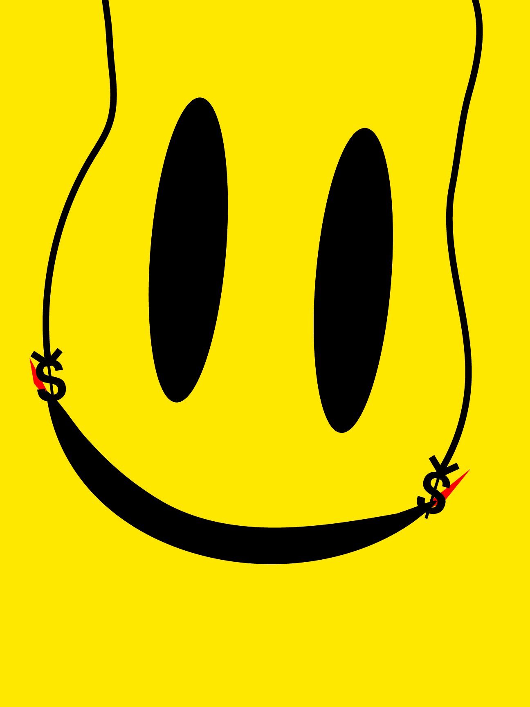
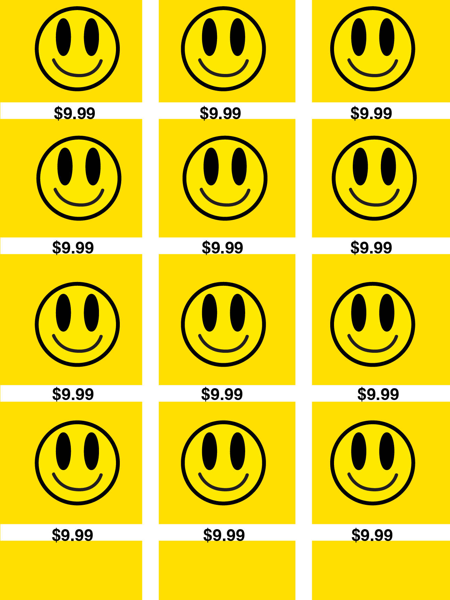
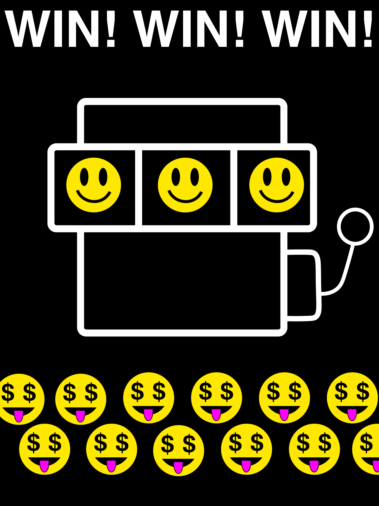
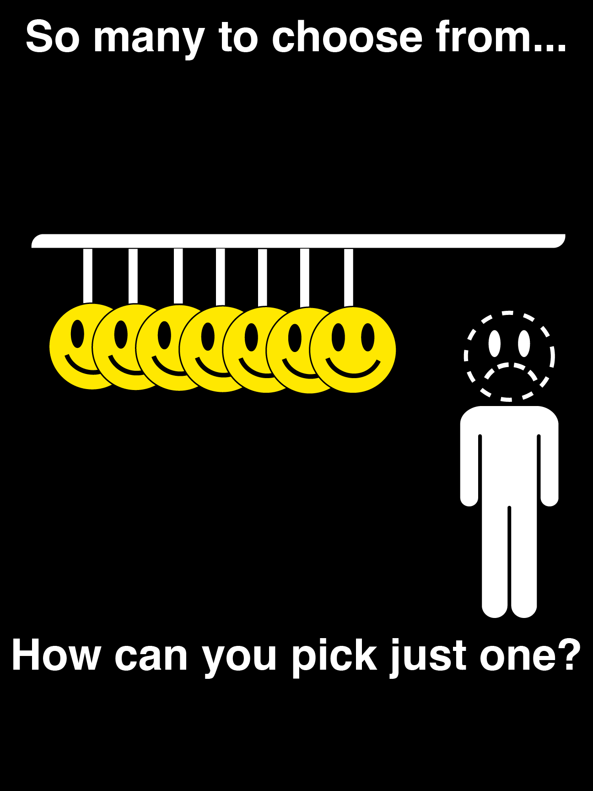
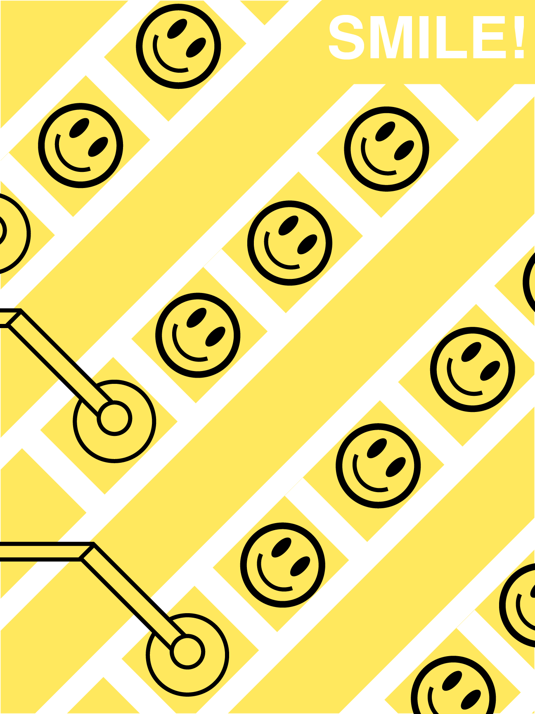

The argument
UNDER CONSTRUCTION

Conceptualizing the project
UNDER CONSTRUCTION
Research ran in two directions at once: the history of the smiley from the 1960s onward and its use in campaigns like Walmart's Rollback, alongside the ITS itself through Ernst Keller and Josef Müller-Brockmann, plus later work drawing on the same principles — NYC Subway signage, Loblaws' No Name packaging, the Watchmen omnibus cover.Rules for composition:
- All text in Helvetica Bold.
- Yellow, black and white colour scheme: the smiley's own palette since the 1960s. Two posters break this with a single accent colour where shape alone could not carry the detail.
- Smooth, unbroken, repetitive geometry. No textures, no gradients, and no illustration that is not a circle, a line or a letterform.
- Deliberate monotony, to convey the feeling of mass production, consumption and commodification.
The series




Getting there
Of the initial paper sketches, most did not survive. Two pieces, “Cheshire Grin” and “So Happy Together?” were cut as the argument narrowed from happiness in general to commercialised happiness specifically. Another poster, “Unidentified Feeling Objects” — the first concept drawn, and the first thing I ever built in Illustrator! — made it as far as a finished digital version before being cut for the same reason. It was a good-looking poster, but I felt like it didn't really say anything.
“Paint by Numbers” took five alternate versions to resolve. The final combines the yellow ground and white type of the first attempt with the black smiley outlines of the third, fourth and fifth, and adds black outlines to the stamping machines so they separate from the background instead of dissolving into it.
Two of the final posters began as suggestions from my professor Sergio “Topo” Toporek and my classmate Liliana “Lily” Mata. “Any Colour You Like” specifically came from Topo's initial idea, which I then substantially revised as the project's target shifted to commercialism; the version shown is my redesign. An alternate cut of it gave the shopper a neutral expression rather than a frown, but lost most of its force in the process.
What I learned
This was my first project built entirely in Illustrator rather than Photoshop, GIMP or paper, and the first large graphic design project I had attempted. Two things carried over from elsewhere: composition, from years of studying art, and the ITS research, which did most of the work of deciding what the final aesthetic could and could not include.
The more useful finding was about my own process. I had always struggled to get my hands to draw what I intended. Working digitally removed that constraint, which turned out to be the only thing that had been in the way.
In the future, I'd like to revisit many of the abandoned concepts, and turn this into a broader series. While I intend for the overall palette and graphical style to remain the same, I'd also like to experiment with other fonts like Gill Sans and expressions of happiness that go beyond just the corporate smiley face image. After all, happiness has been commodified and forced upon us in many other ways than just advertising: why not explore those as well?